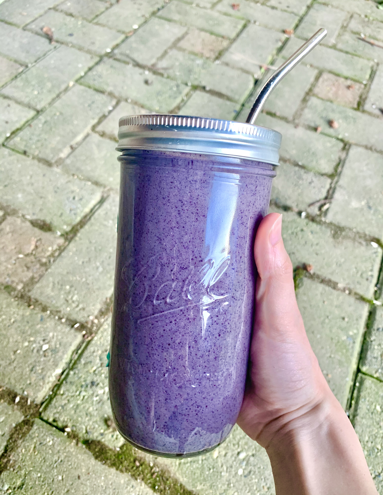

These past few weeks of quarantine have resulted in some serious cabin fever. To stay sane, I’ve been working out more than ever- anyone else comin’ out of this pandemic chiseled?! To help my muscles recover from the extra sweat seshs, I considered what I could use for my post-workout meal that didn’t involve perishable items (because let’s face it, anything that’s not shelf-stable just isn’t realistic right now).
Behold, the humble smoothie comes to the rescue! With frozen fruit, protein powder, and a healthy fat, this simple recipe delivers in taste and nutrition without requiring constant trips to the grocery store. If you don’t have any of the ingredients I used on hand, feel free to mix it up and show me your creations by using the hashtag #laneylamb. Sip up and stay healthy!